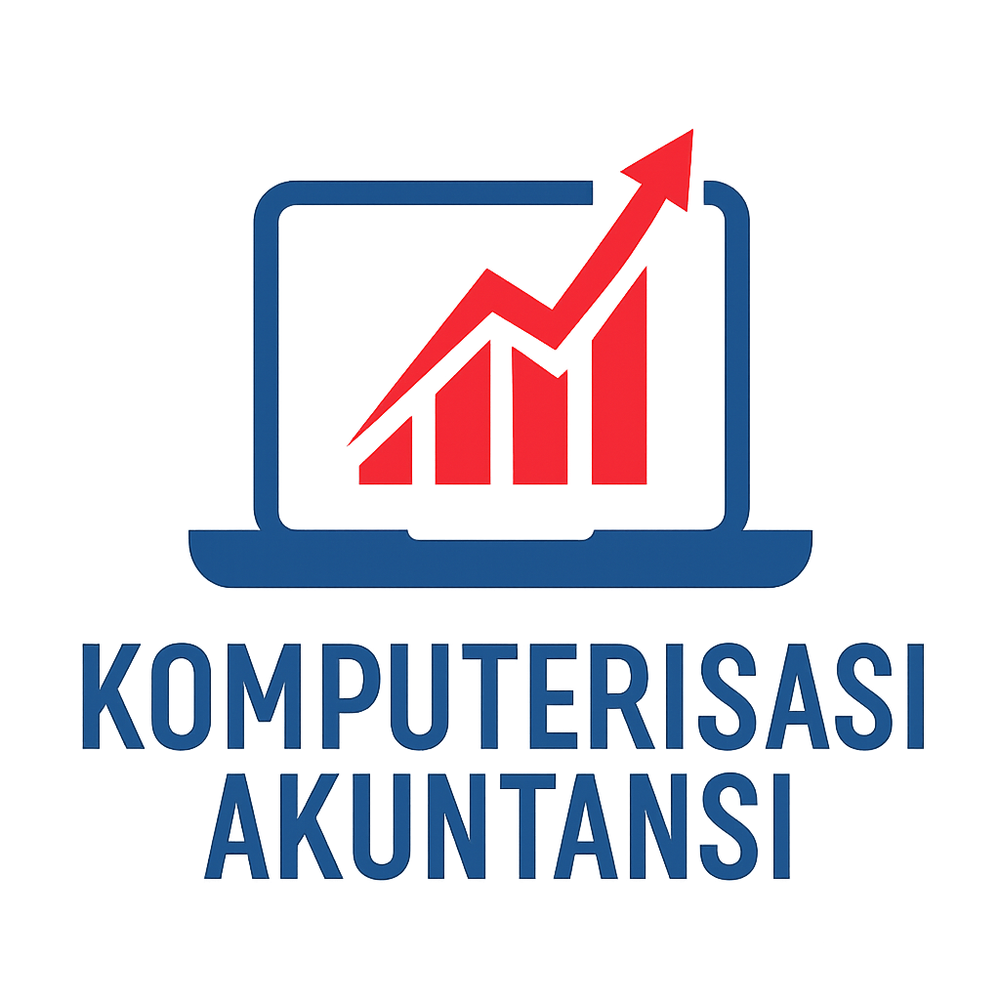

Program Studi
Terdapat 4 Program Studi di STMIK Mardira Indonesia, diantaranya:

Teknik Informatika S1
Teknik Informatika D3

Komputerisasi Akutansi
Manajemen Informatika
Jl. Soekarno Hatta Jl. Leuwi Panjang No.211
Kunjungi Situs Resmi Kami
Klik disini !Terdapat 4 Program Studi di STMIK Mardira Indonesia, diantaranya:
Teknik Informatika S1
Teknik Informatika D3
Komputerisasi Akutansi
Manajemen Informatika
Berbagai UKM di STMIK Mardira Indonesia yang dapat diikuti mahasiswa:
Unit Kegiatan Mahasiswa UDMI
Unit Kegiatan Mahasiswa WALET
Persekutuan Mahasiswa Kristen (PMK)
Komunitas Seni dan Teater (KST)
Creative Student Association (CSA)